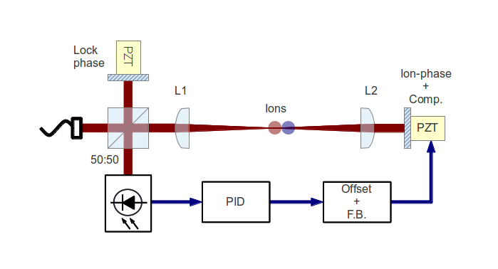

Research notes: March 2013
Table of Contents
- To do
- To do, Molecular Lab Experiments
- To do, General
- "Gantt Project" for project planning
- Fix up Stephen's Toptica PID
- Fix Laura's pulsed-trapping box
- Check for tantalum for ovens
- Look into programming Laura's multiscaler for mass detection
- Find submissions for ITCM-Sussex.com
- Ask Hiroki for a look at the code for cavity mode prop.
- Oxford group proposal research
Dipole force pulse sequence Kevin Amy
09:09
Yesterday's discussions during and after the meeting have cleared up some of the ideas surrounding the pulse sequence for application of the dipole force.
The initial problem that was brought up is that we must turn off the cooling laser (or switch it to blue) before applying the dipole force in order not to damp it out with cooling power, but this must be done without inducing a `kick' from changes in light pressure. Any induced kick may act as a false positive for our dipole force detection.
One proposed solution is to switch directly to blue (amplification stage) at the exact same level of radiation pressure, but this requires much better wavelength stabilisation than can be provided by the wavemetere. Further we cannot prioritise building a doubling cavity for the cooling laser and resurrecting the SCL, if we can think of another way around this problem…
… Which is to use adiabatic switching of the laser beam. In principle, if we switch the laser slowly and smoothly enough we should be able to turn it off and back on again without inducing any kick to the secular motion of the ion. The idea in practice is to program an SRS function generator with a pulse window of the correct shape and to have that pulse window triggered to be in synch with the dipole force and red/blue cooling laser switching.
The optimal shape for the window can be determined from its FFT and its corresponding amplitude at the secular frequency of the ion. If we can work out how large we estimate the dipole force to be, we can set a limit on the amplitude of the window pulse to be some large factor below that. Further, we can look at the amount of time it takes to switch on and off to help us decide on the optimal tradeoff.
Our current (fully hand-wavey) estimates are for a dipole force application time of 1 ms and amplification and recooling times of 1 ms, so I suppose that our on/off times can be roughly of that order as a starting point for testing.
P.S. Matthias sent a useful link for windows (with their FFTs) that are optimised to have good cutoffs of higher frequencies here: http://en.wikipedia.org/wiki/Window_function
From these, the "Blackman" and "Flattop" windows seem to be good places to start.
Dipole force interferometer Nic
12:23
Part of the problem with different powers in the two arms was down to the fact the BS I was using looked like it was a PBS (despite being labelled as 50:50). That has been replaced by one that appears to behave as if it is a 50:50 (or perhaps a PBS for a different wavelength!). There is still a significant drift in the power coming out of the fibre (~10 %) which should be treated eventually, if it becomes important.
After this I felt I improved the matching of the focii of the two arms but the contrast of the interference has drastically reduced (not worth measuring right now). This may still be an alignment issue.
Dipole force interferometer
11:02
I found a flat piezo from Piezomechanik, but according to their catalog it is a multilayer stack. From the looks of it, it is one of the model that has 4 to 3 um stroke (specifically model HPST 150/15-8-3) and stiffness 1800 N/um.
I've also fished out another of the old Noliac piezos, which I believe had a smaller stroke than that, but that needs repairing. UPDATE: Model of the Noliac found: CMAR03. Free stroke 2.3 um, stiffness 950 N/um.
The question is whether minimum stroke or maximum stiffness is the most important factor when considering the stability of the element. It seems a pattern in the Piezomechanik catalog that stiffness decreases with length of the PZT and increases with cross-section, and the model of actuator we have from them has just about the maximum stiffness. I'm tempted to go with the Piezomechanik one instead of the Noliac. A) because the increased stiffness seems like it would be a good indicator of stability, B) because a smaller stroke only gives us stability against electronic noise, which we are likely to have relatively little of, and C) because the Noliacs are more expensive/rare.
16:27
I've mounted the PZT on a standard mirror mount with a mirror designed for 0 deg. reflection at 850, which is the closest wavelength I could find. The power of the beams in the interferometer are actually mismatched because this mirror is better than the one I used for the other arm (250 uW vs 200 uW), although some of that might have something to do with the focussing and de-focussing lenses.
As before, interference can be seen without modulating either of the PZTs, simply due to the jitter in path lengths. Using this as an indicator of overlap, it's quite easy to get a good overlap over a pretty long path length (up to 2 meters). However, when we install a photodiode close to the beamsplitter we can see that the contrast ratio is only on the order of 1/8, which indicates that there is bad matching of the modes of the two arms of the interferometer. In fact it's clear visually that they are different, particularly when looking at the spot size at long distances. Some work should be done to try to match the focal lengths better. It might also be interesting to look at the contrast ratio further along the beam to see if that is informative in any way.
Dipole force interferometer
14:29
Matthias agrees that one of the standard PZTs might be too unstable for the second arm of the interferometer. He doesn't have a feeling for whether or not a translation stage would be more stable, but regardless is skeptical that they will provide sufficient precision unless we buy an expensive model. The suggestion is that we find one of the short, flat PZTs we might have lying around, that have a shorter stroke and likely a higher stability.
General
14:49
Discussions after lunch yesterday with the molecule group rounded up as follows:
- Kevin and Amy will work on programming an SRS function generator so that we can turn off and on the cooling laser adiabatically i.e. without causing the ion to be kicked. This will need to be done when we are switching on the optical dipole force so that the ions can oscillate without damping from the cooling laser. This should be a case of mapping the response of the AOM and programming the function generator to compensate for it to give the correct pulse shape.
- I should carry on working on the interferometer, whilst also thinking about simulations of the above adiabatic switching, and the first steps of the programming required for automation of the experiment.
- We must consider (probably via simulation) whether a second calcium ion would help us out in this specific experiment. Presumably we would lose acceleration from the dipole force by a factor of 1/3, but would gain in fluorescence by a factor of 2?
17:22
Kevin started taking a look at the adiabatic switching using the SRS function generator. The approach we'd have to take is to program the whole cooling laser intensity sequence for the experiment, into the generator.
The limit here is that we only have 1000 points for the whole wavefunction. Matthias estimates that a soft maximum for the dipole force exposure is 1 ms. If we estimate that we amplify and recool over a period of 1 ms, that gives our waveform a time-resolution of 2 us.
The time-period over which we must switch off the laser must correspond to a frequency much lower than the secular frequency of the trap (approx. 100 kHz), say by a factor of 100. This gives us a switch off time of 1 kHz, or 1 ms. That's long enough to give good resolution over the switching period.
On the other hand however, to simplify the process we could just try using a low pass filter at 1 kHz to try and achieve the same effect. The trade-off for that simplicity will be the potential danger of ringing affects from higher frequencies, but since it's such a simple system we might as well give it a go?
Dipole force interferometer
12:24
Had been struggling a bit with coupling, was stupidly using APC coupler, and now switched to an old, crappy PC coupler I found. Still only got 40 uW out of a possible mW though, while the coupling and lens are about maximal. At first glance the fibre looks to be the problem, since it doesn't transmit much light from the fibre alignment pen any more (despite having done so fairly well just yesterday).
14:45
The fibre was dud, and it's been labelled and put away. Hopefully it's just damage to the surface of the fibre and it can be polished and re-used at some point.
The replacement fibre has given us 1.5 mW out from a total 4.1 mW. I didn't spend much time re-optimising the lens position and so the extra 30% or so we expect can probably got from there when it becomes relevant.

Schematic of the dipole-force laser interferometer
The dipole interferometer setup that must now be built is shown again in Fig. dipoleint. The actively controlled PZT on the right-hand side is used to overlap the standing wave with the ion for the optimal amplitude of the dipole force, and to compensate for any deviations of the optical path-length detected by the interferometer.
The length of the second arm of the interferometer can also be adjusted in order to maintain maximum sensitivity in the interferometry signal, regardless of the overlap of the standing wave with the ion. I'm wondering right now though, whether this could potentially introduce a troublesome drift in the overlap with the ion, since any drift in the top PZT (which is not actively position-compensated), will result in unwanted `compensation' of the right-hand PZT by the feedback system. Would a micrometer stage be better/more stable? I guess it would need sub-micrometer precision and high stability, but that should be manageable. The question is which is more stable, a PZT or a micrometer stage?
Dipole force interferometer
09:26
According to the project plan (file), I should have finished with this (a week ago!) and be onto designing and automating the state-detection experiment! Of course we forgot to take into account my two weeks away so it's hardly a realistic timescale.
Regardless the trap hasn't started baking yet so I still have time to work on the interferometer setup before it's required on the main table. Hopefully Kevin is also on his way as far as software goes, but I need to have a chat with him about that.
The notes of last month say I managed only 67% efficiency out of the AOM at last take. I think it can be better given that we are only single pass and have a lot of freedom as far as our choice of lens goes, but it will do for now in order to get going with the interferometry. Next up is to couple the output of the AOM to a fibre, and then build a test interferometry setup on the laser table.
To do
To do, Molecular Lab Experiments
DONE Beam-line preparation Nic Kevin
- CNCL Second TMP installation
Data in previous headline indicates there's not enough pumping power and the ion trap region in the beamline chamber. It's time to consider adding a turbo to pump alongside the ion pump to maintain a good pressure differential between the beamline and the trapping region.
Matthias has ordered the parts, but we are trying a setup that may not require them first (see entry on preliminary N2 chamber)
We're going ahead without this, just using a prechamber as described in January's notes.
- DONE Take apart beamline
- Alan needs the 5-way cross
- Alan now has the second skimmer built, and I've taken the 5-way cross out for him and handed it over.
- DONE Check for all the parts
Need 6 CF60 (?) gasketts and an adapter from CF60 to DN63.
- Hand over the rest to Kevin
TODO Dipole force laser setup Nic
- DONE AM setup
- DONE New laser
Set up and lasing at correct wavelength. Power is lower than the 100 mW it is rated at with an external cavity, but we are not exactly at the emission peak of the bare diode (took a lot of tuning away from the place with easiest optical feedback). Further, the bare diode is rated at 200 mA, but I'm not sure how high I can run it with an external cavity.
λ = 787.475 nm,
Ith ~ 45 mA,
T = 25.36ˆ C,
I = 77.54 mA,
VPZT = 107 V,
P ~ 10 mW,
- DONE Single-pass AOM and optical fibre
- Set up on the test table.
- TODO Inteferometer/feedback setup
Find appropriate PZT for second arm of the interferometer (small travel, high stability)
DONE Time-varying B-field ion simulation Nic Kevin
- DONE Matthias' code
- Compare Matthias' approach with my own
- Virtually identical apart from the solver, which is the correct, time-dependent approach.
- DONE Modifications
- Frequencies around Γ show a dropoff, but that's much higher than what we see. Need new ideas as to the source of the attenuation.
TODO Work on DACs for the new SCL Nic Kevin
- TODO Building boards
- Matthias has the plans:
Pester him for them.
- Received:
Matthias sent them ages ago, but I didn't spot them in my mail. He's still yet to order the actual DACs though, so there's still time. I could make the boards however, in preparation.
- Matthias is making the boards:
Matthias is making the boards, I think it'll just be up to me to program the whole thing.
- Pins used:
Check with Matthias that his design has incorporated these pins as I/Os:
- Port D: RD8 (peak detect input), RD5 (CNinterrupt)
- U2RX pins, unless he's already designed these away
- TODO Programming
- TODO Write SPI library for PIC comms with computer
- TODO Write SPI library for PIC comms with DAC
- TODO Write SPI library for PIC comms with computer
TODO Code an automation program for experiments Nic Kevin
- TODO Contact FAST ComTec
About the issue with having to communicate with the card via the server.
- TODO Fix datasocket bug
- TODO Flow chart for experimental sequence
CNCL Look up literature for PI of N2 Amy Nic
- Wavelength and Isat
Matthias and Jack seem to be under the impression that the problem is down to the power in the dye laser. This in turn is likely to be a problem with the power from the pump laser, which Chris Rennick from Oxford had a look at. He says that it needs some regular maintanence, and probably a new flashbulb. An engineer has been called and a visit will be arranged soon by Jack.
TODO Simulations Nic
- TODO One or two calcium ions
Although an extra ion will reduce the acceleration of the crystal due to the dipole force, is the increase in signal a good trade-off?
- TODO Adiabatic switching on/off of the cooling laser
Optimal parameters for adiabatic switching in order to avoid `kicking' the ions when switching between cooling and optical-dipole force and amplification periods. What is the typically used function?
To do, General
DONE "Gantt Project" for project planning
- Installed.
DONE Fix up Stephen's Toptica PID
- More unstable that I remember, tune up.
- I gave a go to tuning it up but no luck. Might need a closer look, but will ask Matthias to have a gander first.
- Matthias had a look and fixed it up before I went away to Mexico. Rather than just looking at the electronics, he tuned up the doubling cavity too. This improved the stability significantly, from what I hear.
DONE Fix Laura's pulsed-trapping box
Somebody must have done this while I was away. Laura managed to get the square-wave trapping to work before she left.
TODO Check for tantalum for ovens
CNCL Look into programming Laura's multiscaler for mass detection
Laura's left with her trap, back to Oxford. They're first going to look into ion identification using MCPs and the square-wave trapping.
Find submissions for ITCM-Sussex.com
Matthias has reminded us to look through the old website for these.
I should add a scanning cavity lock section to the "Technology" page of the site (extended abstract?).
Furthermore, I think it'd be nice to look over the diagrams that are on there already, and think about whether or not I could make some improved ones in POVRAY.
Rev. Sci. Instrum. 81, 075109 2010:
"We have implemented a compact setup for long-term laser frequency stabilization. Light from a stable reference laser and several slave lasers is coupled into a confocal Fabry–Pérot resonator. By stabilizing the position of the transmission peaks of the slave lasers relative to successive peaks of the master laser as the length of the cavity is scanned over one free spectral range, the long-term stability of the master laser is transferred to the slave lasers.
By using fast analog peak detection and low-latency microcontroller-based digital feedback, with a scanning frequency of 3 kHz, we obtain a feedback bandwidth of 380 Hz and a relative stability of better than 10 kHz at timescales longer than 1 s."
Current undergraduate/masters projects are focused on implementing our scanning cavity lock design with a cheap and feature-rich microcontroller from the dsPIC line (http://www.microchip.com/). Automated impulse-response-function analysis and digital filter generation will provide significant improvements to bandwidth and stability.
- Comments on current webpage:
- There are no sub-titles at the lowest level of the pages when looking at the research interests. e.g. "ion-photon entanglement" is a page inside "cavity-QED", but when you click on it it is title only "cavity-QED".
- Only "charge exchange reactions" in the molecular physics section. Should we show something about our research direction?
- Can we add references to our papers in the "crystal weighing" and "optical excitation" sections?
Ask Hiroki for a look at the code for cavity mode prop.
Asked Hiroki, but he hasn't finished it yet.
Oxford group proposal research
-
- Drewsen group BBR assisted cooling
- Previous ammonia research
- Ammonia level structure for state-detection
-
- Drewsen and Schiller both have papers on BBR according to the proposal.
- Drewsen proposal uses Raman transitions, requiring narrow/stable lasers - does this apply to our system?
E-mail Brianna to assess the status of the Stark decelerator.
- General:
Look closer at the reactions that are proposed to investigate in the proposal, and make sure that there are going to be setups for those experiments, or ones to do with our research here, at Oxford.
- Reactions -> Deuterium fractionation:
Reactions involving H atom transfer to ionic species e.g.:
Ca^+ + HD0 -> CaH^+(CaD^+) + OD(H) Nd_3^+ + HDO -> ND_4^+(ND_3H^+) + OH(OD)
Addition reactions with H atom elimination (e.g. in proposal), and Near-thermoneutral charge transfer reactions (e.g. at link).
- Experimental:
In-situ measurement of masses and numbers of reactants and products -> Monitor sequential isotopic exchange.
Quantum-state selected reactants from stark decelerator (neutrals) and REMPI (ions). Thermal redistribution of ions monitored by non-destructive state-detection.
Control internal states using BBR assisted schemes (see nphys1604 and nphys1605).